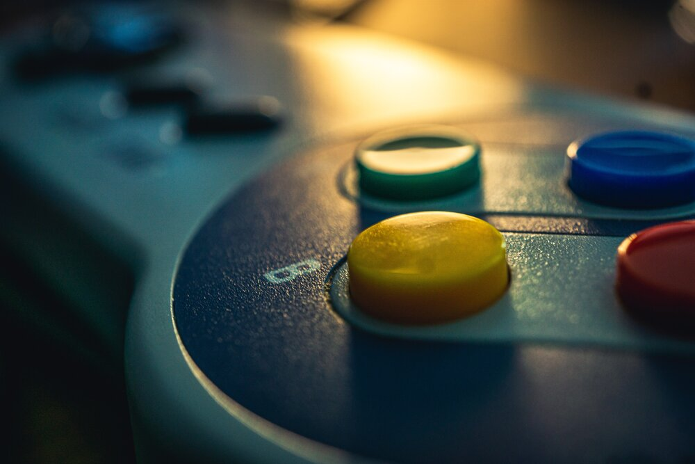
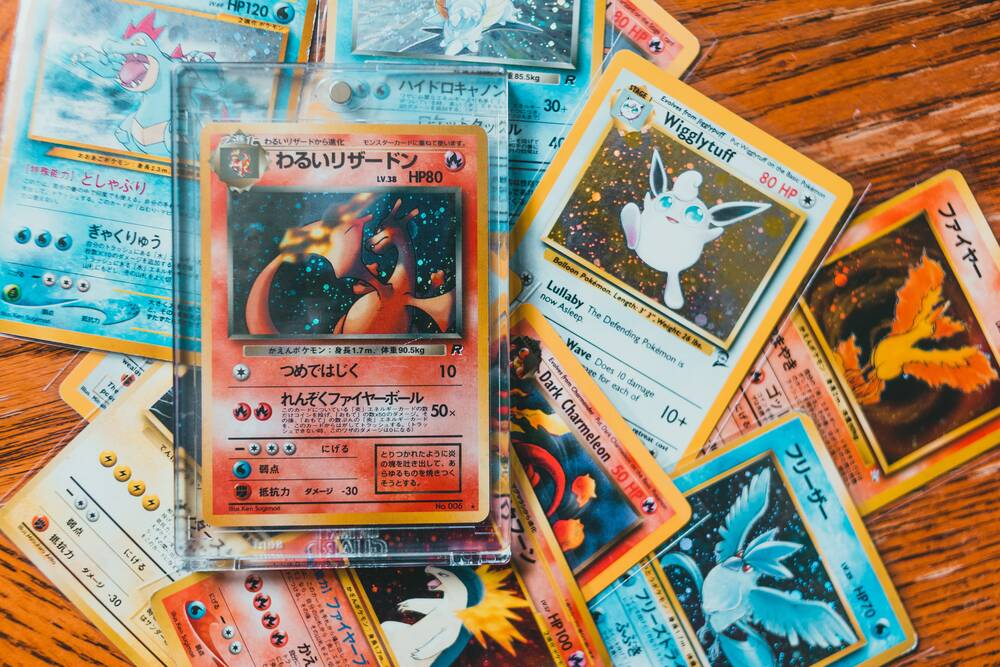

So one of my goals is to become a game designer and currently I am working
on understanding this free to use game engine called "Game maker" and even though because
of the busyness of life I am not dedicating as much time as I would like, I have been able to
make about half a game through there helpful tutorials and plan on continue to work with that
engine in the time to come, so that when I get in school specifically for game design I have some
expierence under belt as small as it might be, I know this will help me a lot.

Another thing I want to accomplish is to create a board or card game of some kind
the main purpose of this game will not be to make money but to flex those creative muscles
as well as to start thinking like a game designer more, my fiance and I have started
rough drafts for a boardgame involving certain animals but it is still in the draft
part of the creation process and do not have much to show for it so far but that will
change with time.
 The third project I have a small part off is an animation that is directed
by one of my friends that I do summer sales with in which I play one of the
characters in this animation about a morning school anouncement, my friend
is a very talented animator so he will help me with future projects in which
I would write the screenplay I am very excited to also see the finished product
of our first colaboration.
The third project I have a small part off is an animation that is directed
by one of my friends that I do summer sales with in which I play one of the
characters in this animation about a morning school anouncement, my friend
is a very talented animator so he will help me with future projects in which
I would write the screenplay I am very excited to also see the finished product
of our first colaboration.